0. 課程資訊與教材
| 課程名稱 | EP19「結構先於工具：用 YAML 打造可查證的文獻引用與資訊圖表工作流」 |
|---|---|
| 頻道 | 生成式 AI 應用電台・晨學講堂 |
| 直播時間 | 01月21日（三）06:30-07:30 |
| 教材 | 課程筆記 Google 文件（6 節完整講義）＋官方課程簡報 16 頁＋「YAML 萬能控制層」框架文字檔 |
| 一句話先懂 | YAML 不是語法，是「駕馭 AI 的方式」：先鎖定結構，再讓 AI 在結構裡填內容，讓輸出可驗證、可重現、可交接。 |
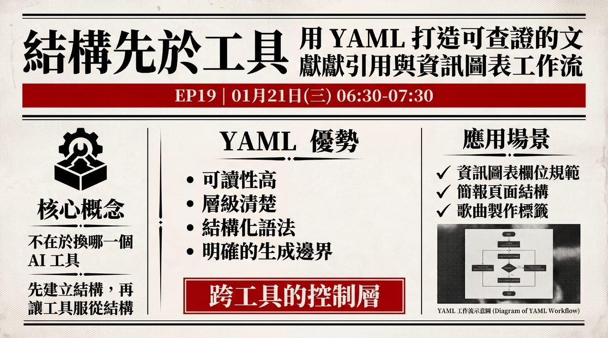
💡 本頁內容整理自講師撰寫的完整課程筆記文件，並對照官方簡報逐頁核對；簡報原圖直接嵌入本頁（16 頁中 13 頁為圖文設計頁，其餘 3 頁為純文字／圖形物件頁，內容已完整收錄於對應章節文字中）。
1. 核心概念：為什麼要用 YAML？
在與 AI（如 ChatGPT、NotebookLM）溝通時，自然語言雖然方便，但也容易發散。YAML（Yet Another Markup Language）是一種標記語言，具備四項優勢：
- 結構化控制：能更精準地限制 AI 的輸出範圍與格式。
- 高可讀性：對人類和機器都友善，比 JSON 更好讀。
- 風格一致性：特別適用於需要維持特定風格（如簡報、資訊圖表）的場景。
- 跨工具通用：這是一套邏輯框架，適用於 ChatGPT、NotebookLM、Claude 等不同模型。
YAML vs JSON vs Markdown：三種格式的定位差異
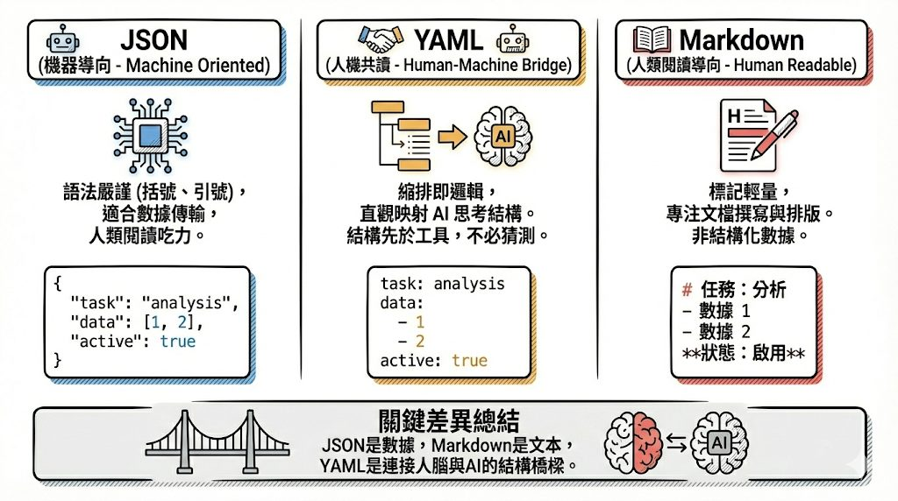
| 格式 | 定位 | 特性 |
|---|---|---|
| JSON | 機器導向 Machine Oriented | 語法嚴謹（括號、引號），適合數據傳輸，人類閱讀吃力。 |
| YAML | 人機共讀 Human-Machine Bridge | 縮排即邏輯，直觀映射 AI 思考結構；結構先於工具，不必猜測。 |
| Markdown | 人類閱讀導向 Human Readable | 標記輕量，專注文檔撰寫與排版，非結構化數據。 |
「JSON 是數據，Markdown 是文本，YAML 是連接人腦與 AI 的結構橋樑。」
—— 簡報關鍵差異總結
2. YAML 的基礎語法與分層思維
不需要會寫程式也能懂，只需記住兩個關鍵符號，加上一種分層思維。
- 冒號（:）：定義屬性（例如 Color: Red）。
- 短橫線（-）：定義清單或步驟（條列式內容）。
- 縮排：利用縮排來建立層級關係。
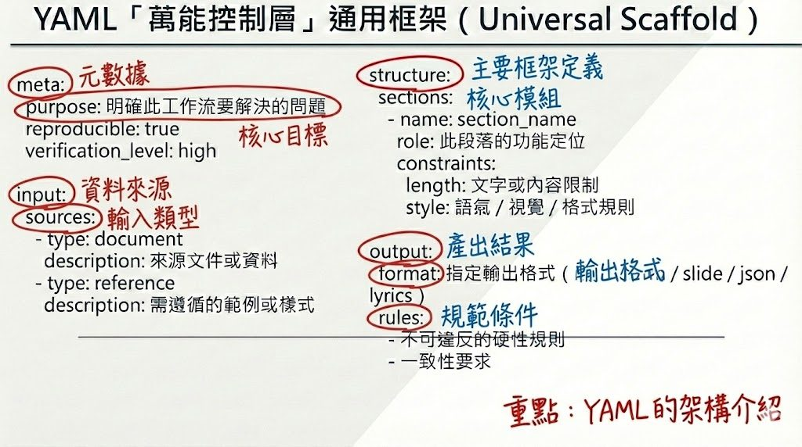
YAML 萬能控制層框架meta:
purpose: 明確此工作流要解決的問題
reproducible: true
verification_level: high
input:
sources:
- type: document
description: 來源文件或資料
- type: reference
description: 需遵循的範例或樣式
structure:
sections:
- name: section_name
role: 此段落的功能定位
constraints:
length: 文字或內容限制
style: 語氣 / 視覺 / 格式規則
output:
format: 指定輸出格式（markdown / slide / json / lyrics）
rules:
- 不可違反的硬性規則
- 一致性要求
學 YAML 不是背語法，而是學「分層」
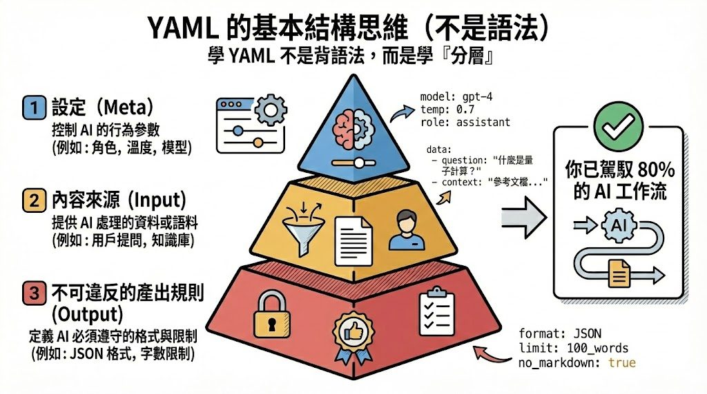
1
設定（Meta）
控制 AI 的行為參數（例如：角色、溫度、模型）。
2
內容來源（Input）
提供 AI 處理的資料或語料（例如：用戶提問、知識庫）。
3
不可違反的產出規則（Output）
定義 AI 必須遵守的格式與限制（例如：JSON 格式、字數限制）。
「你已駕馭 80% 的 AI 工作流。」
—— 簡報：掌握這三層分層思維，就等於掌握了大部分結構化提示工程
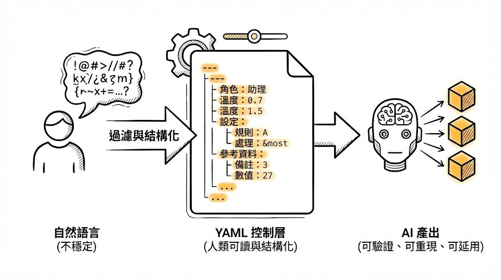
3. 何時該用／不必強用 YAML？
關鍵心法：關鍵不是會不會用，而是什麼時候用（It's not about ability, but timing.）。
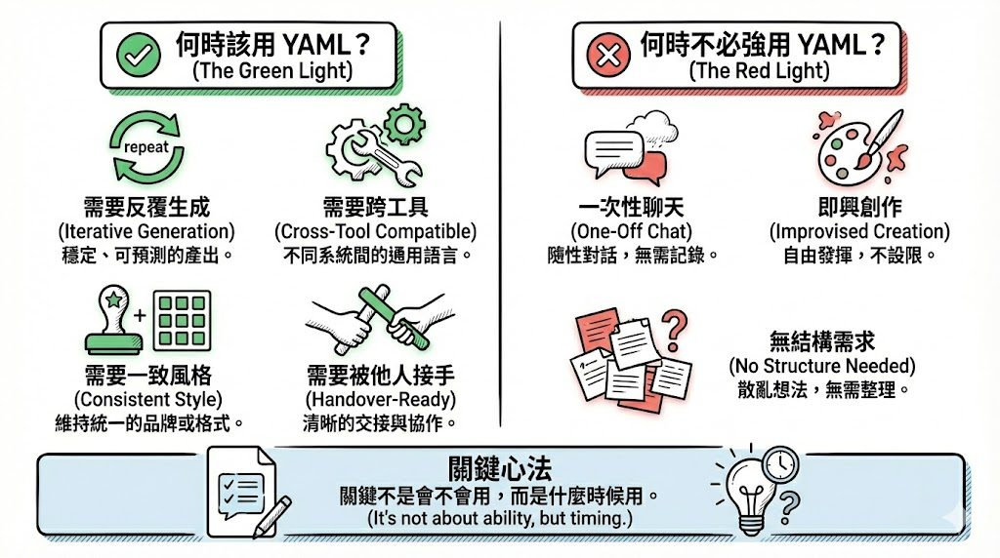
| ✅ 該用 YAML（Green Light） | ❌ 不必強用 YAML（Red Light） |
|---|---|
| 需要反覆生成（Iterative Generation）：穩定、可預測的產出。 | 一次性聊天（One-Off Chat）：隨性對話，無需記錄。 |
| 需要跨工具（Cross-Tool Compatible）：不同系統間的通用語言。 | 即興創作（Improvised Creation）：自由發揮，不設限。 |
| 需要一致風格（Consistent Style）：維持統一的品牌或格式。 | 無結構需求（No Structure Needed）：散亂想法，無需整理。 |
| 需要被他人接手（Handover-Ready）：清晰的交接與協作。 |
4. 實戰技巧一：逆向工程（解構）
目的：當你看到喜歡的簡報、圖表或文件風格，想讓 AI 學習並模仿時。
- 上傳素材：將參考圖檔（Image）或 PDF 上傳給 AI（推薦用具備視覺辨識的模型）。
- 下達指令（Prompt）：要求 AI 分析該檔案的「視覺結構」、「配色」、「排版邏輯」。
- 指定輸出格式：明確要求 AI「將分析結果轉換為 YAML 格式」。
Prompt 範例請擔任一位專業的視覺設計師。請分析這張圖片的版面配置、配色方案（色號）、字體風格以及內容架構。請將分析結果以 YAML 格式輸出，以便我後續使用。
應用場景：不想手動調整簡報母片；想複製某個資訊圖表的風格，但內容要換成新的。
💡 實例演練——應用場景三：不用 YAML 的簡報生成（NotebookLM 圖像法）。當設計優先於內容時，可反向操作：先鎖定「視覺不可變」，再讓 AI 填文字。此法適合政府簡報、高橋流、品牌簡報。
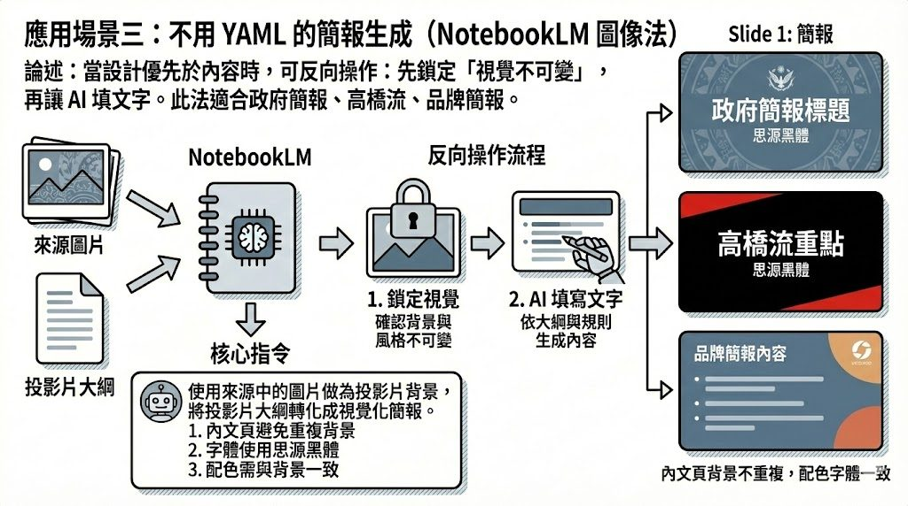
核心指令使用來源中的圖片作為投影片背景，將《投影片大綱》轉化為視覺化簡報。
1. 內文頁避免重複背景
2. 字體使用思源黑體
3. 配色需與背景一致
禁止：自行設計新背景／忽略圖片來源改用純文字／加入大綱外內容／使用思源黑體以外的字型
5. 實戰技巧二：順向工程（重塑／生成）
目的：利用逆向工程得到的 YAML 程式碼，作為「風格守門員」，讓 AI 生成新內容時不跑版。
- 提供 YAML 規則：將剛剛逆向工程得到的 YAML 碼貼給 AI。
- 輸入新內容：給定你想要製作的新主題（例如：將「年獸的故事」改成「元宵節由來」）。
- 下達指令：要求 AI「依照上述 YAML 的風格規範，生成新的內容結構」。
- 生成成品：將 AI 產出的結果放入簡報工具（如 Gamma、Canva 或手動製作）。
💡 NotebookLM 的進階用法：可以將 YAML 規則存成一份 .txt 或 Markdown 檔案（例如 style_guide.yaml），上傳至 NotebookLM 作為「來源」。在對話時，NotebookLM 就會變成一個「熟知該風格的專家」，可隨時要求它：「請依照來源中的 YAML 風格，幫我撰寫這一頁的簡報大綱。」
6. 六大應用場景範例：YAML 範例 + Prompt
簡報逐一示範六種場景，每個場景都是「YAML 定結構、Prompt 執行、AI 只做填充」的固定套路。
場景一：資訊圖表還原／模仿／再製
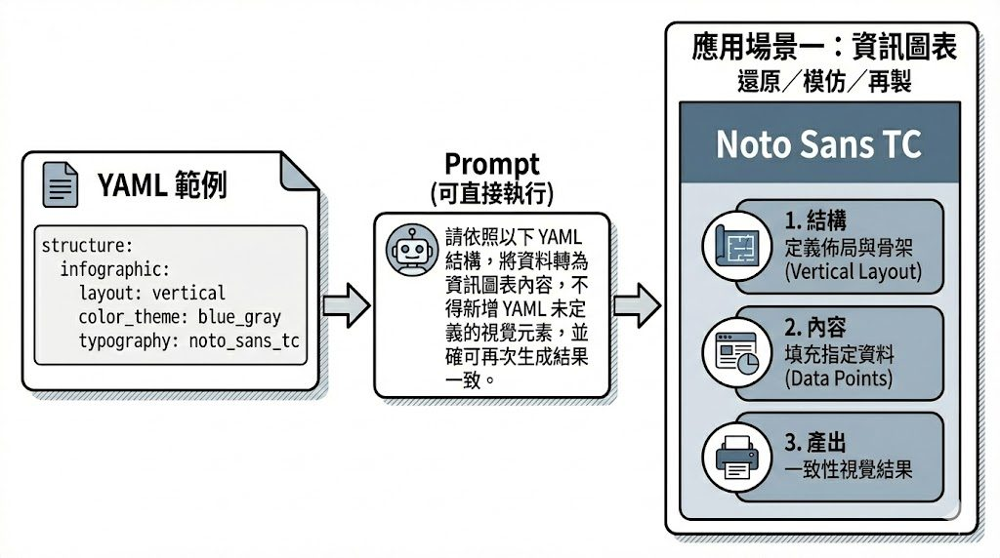
YAML 範例structure:
infographic:
layout: vertical
color_theme: blue_gray
typography: noto_sans_tc
Prompt請依照以下 YAML 結構，將資料轉為資訊圖表內容，不得新增 YAML 未定義的視覺元素，並確保可再次生成結果一致。
場景二：簡報生成還原／模仿／再製
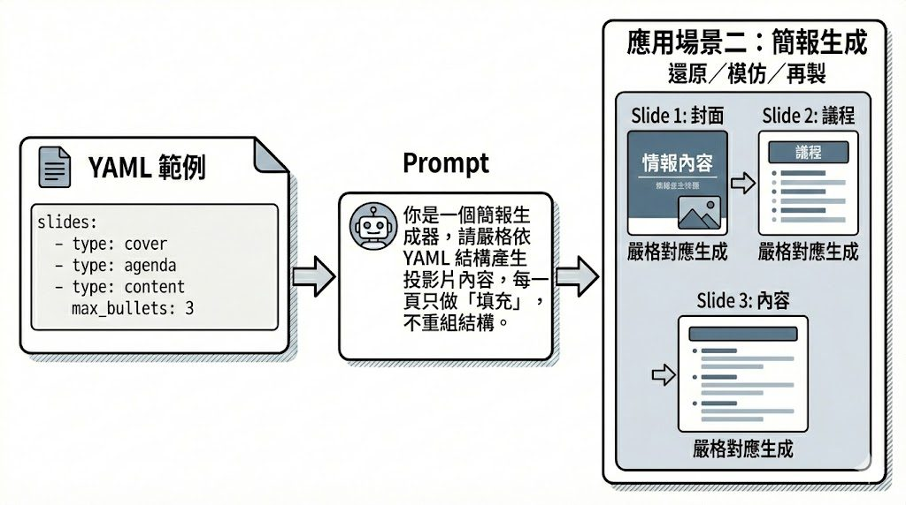
YAML 範例slides:
- type: cover
- type: agenda
- type: content
max_bullets: 3
Prompt你是一個簡報生成器，請嚴格依 YAML 結構產生投影片內容，每一頁只做「填充」，不重組結構。
場景三：不用 YAML 的簡報生成（NotebookLM 圖像法）
詳見第 4 節「實戰技巧一：逆向工程」的完整流程說明與簡報原圖。
場景四：多篇論文方法論摘取
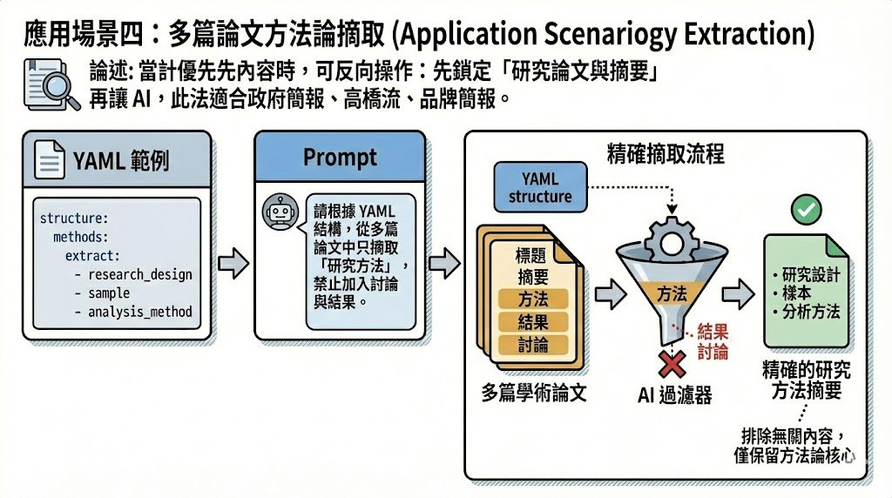
YAML 範例structure:
methods:
extract:
- research_design
- sample
- analysis_method
Prompt請根據 YAML 結構，從多篇論文中只摘取「研究方法」，禁止加入討論與結果。
場景五：參考文獻格式再製
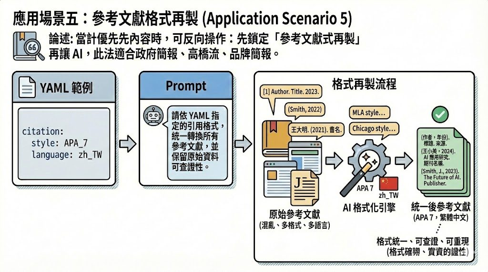
YAML 範例citation:
style: APA_7
language: zh_TW
Prompt請依 YAML 指定的引用格式，統一轉換所有參考文獻，並保留原始資料可查證性。
場景六：歌曲內容生成
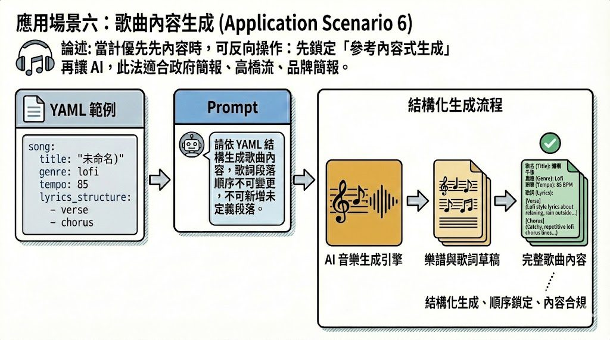
YAML 範例song:
title: ""
genre: lofi
tempo: 85
lyrics_structure:
- verse
- chorus
Prompt請依 YAML 結構生成歌曲內容，歌詞段落順序不可變更，不可新增未定義段落。
7. 專家建議與心法
- 不要從頭手寫 YAML：效率太低。請善用 AI 幫你寫（從自然語言轉譯，或從圖片逆向生成）。
- 雙向轉譯，YAML 是一個橋樑：人類想法（自然語言）→ YAML（結構化指令）；現有成品（圖片／PDF）→ YAML（風格參數）。
- 檢核點（Checkpoints）：在生成長篇內容（如 20 頁簡報）時，不要一次做完。先做「檢核」，問 AI：「請檢查你生成的內容是否符合上述 YAML 的規範？」確認無誤後再繼續執行。
- 工具的極限：目前的 AI 簡報工具（如 Gamma、Beautiful.ai 等）雖然方便，但通常只能做到 80-90%。「手刻（手動微調）」是必要的，AI 負責產出結構與初稿，最後的精修還是要靠人工。
- 長期記憶：將風格轉成 YAML 存起來，等於建立了你的「風格資料庫」，下次要用時直接把檔案丟給 AI，就能瞬間喚醒它的記憶。
8. 總結流程圖與結語
- 素材／想法
- AI 解析（Prompt：轉成 YAML 格式）
- 取得 YAML 代碼（含配色、排版、結構）
- 輸入新需求（Prompt：依照此 YAML 規範）
- AI 生成新結構
- 匯入工具／手動排版 → 最終成品
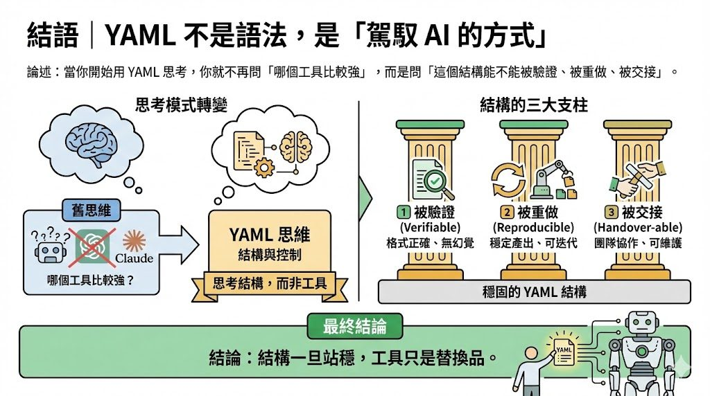
「結構一旦站穩，工具只是替換品。」
—— EP19 最終結論
9. 資料來源與製作說明
- 原始教材：EP19「結構先於工具：用 YAML 打造可查證的文獻引用與資訊圖表工作流」講師撰寫的完整課程筆記文件（6 節）＋官方課程簡報 16 頁＋「YAML 萬能控制層」框架文字檔。
- 製作方式：下載原始 pptx，取出內建的每頁設計背景圖（13 頁為圖文設計頁，已完整保留原圖），並逐節比對課程筆記文件與簡報文字內容，逐頁親眼判讀後整理成本頁章節。內容為真實課程內容，未經改寫杜撰。
- 誠實聲明：簡報第 2、3、5 頁為純文字／向量圖形排版（無內嵌點陣背景圖），其文字內容已完整收錄於對應章節（第 1、2 章）；本集資料夾未附可直接存取的逐字稿，示範操作畫面與逐字稿時間碼暫缺，如日後開放取得可再補入。
- 介面參考：頁面採全站現行「乾淨白底編輯風」版型（沿用 EP38 課堂筆記頁架構）。